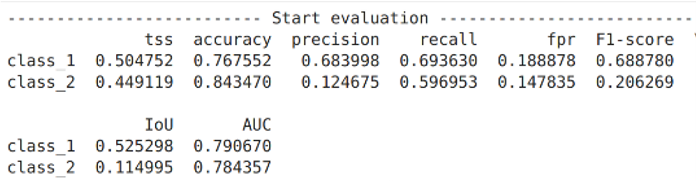

Cropland Maps on Planet-Scope Imagery Using U-Net at National Scales in Zambia
Yao-Ting Yao
Advisor: Lyndon Estes, Sitian Xiong
Master Thesis
Cropland mapping is a crucial tool for evaluating food security. Crop fields in sub-Saharan African countries expect to expand by more than three times in the next decade to satisfy food demand. Developing accurate, large-area cropland maps of Africa’s smallholder agricultural systems is critical.
To address this need, this research use U-Net, a convolutional neural network, to map cropland for the year 2022 in the Republic of Zambia, a country undergoing rapid agricultural growth.
Created a labeling platform and workflow protocol on Google Earth Engine (GEE)
A grid of 200 by 200 was generated to cover the entire region of Zambia. A catalog was created, using R script to randomly seed 600 labels in each agriculture zone. High spatial-resolution satellite imagery grids of the growing and off seasons were obtained from Planet-Scope (with a resolution of 2.77m), along with NDVI imagery. These were utilized to create labels for training and evaluating the model, resulting in 921 labels for Zambia and the 5,377 labels from three other African countries (Kenya, Tanzania, Ghana, and the Republic of Congo).

The Google Earth Engine (GEE) API was utilized to develop a set of automation tools that involved rasterization of labels into three distinct classes, non-field(class_0), field(class_1), and field boundary(class_2). In addition, an imagery downloader and resampler were also created using the same API. Also created check tool to check if files are missing in the folder and needed to be reloaded.

Model Training, Validation and Pridiction
We trained the model to recognize three classes (field, non-field, and field boundary) for 200 epochs, using 80% of the collected labels for training and 20% for validation, resulting in an F1 score of 0.66 for the field interior class. We then fine-tuned the model on the labels for Zambia (F1 = 0.69), and the mapped the predictions for the field interior class for the entire country and passed these through a final segmentation step to convert the binary predictions into individual fields.


U-Net is one of the cutting-edge architectures of CNN for image segmentation. U-Net has U-shape construction path (encoder) and an expansion path (decoder) structure, in which the spatial scale is subsequently reduced after consecutive pooling operations and increased in a contracting path. This research use Pytorch and scikit-learn library to train model and predict results.

The results demonstrate the value of applying neural network-based approaches with new sources of high resolution imagery for cropland mapping because of its ability to detect individual fields more effectively than approaches previously used to map Zambia (e.g. Random Forests). Future opportunities exist to improve the model by collecting labels that better balancing the number of labels among different classes, which includes improving the number of non-field labels on landscapes that lead to false positives (e.g., wetland areas). In addition to improving the overall accuracy, the maps provide additional valuable information on field size, which can be used to understand the characteristics of the agricultural system.
